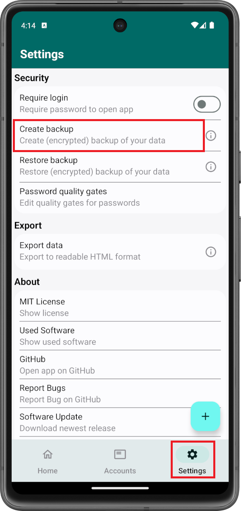
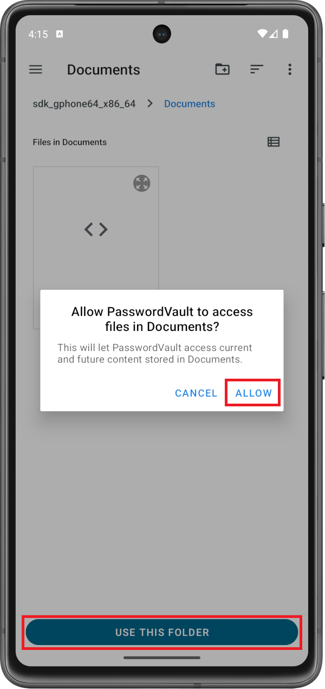
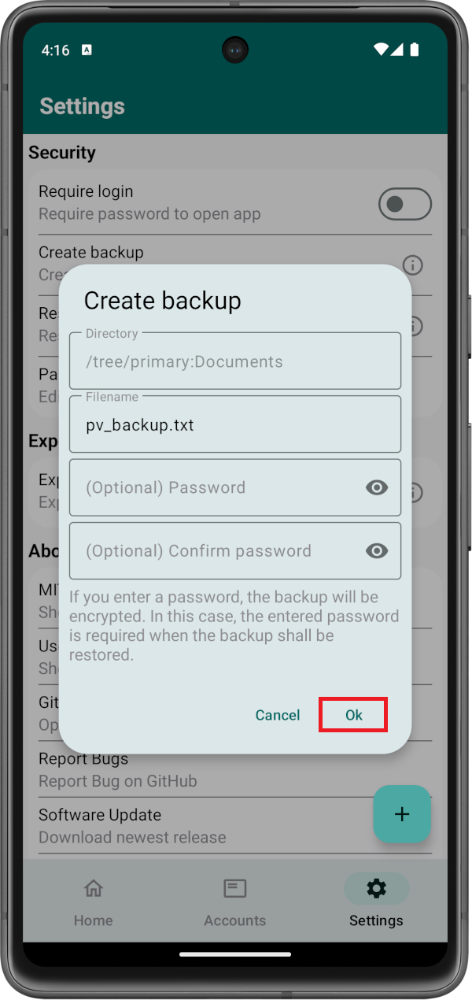
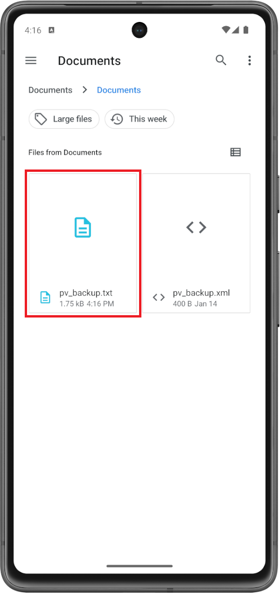
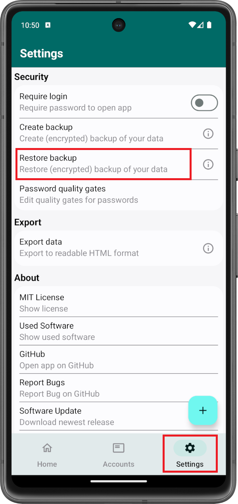
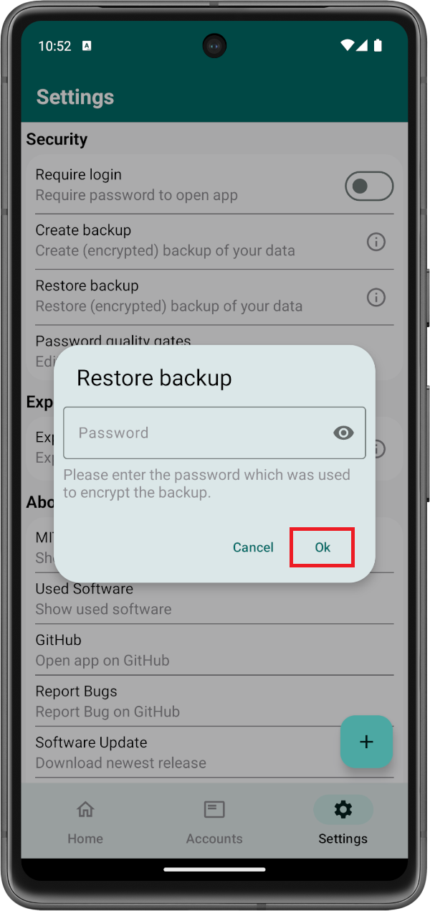

From time to time, you may want to create a backup of your data. Maybe you got a new device with which you want to use your data. Maybe you want to keep your data in case your system crashes and needs to be reinstalled. Maybe you do not want to take the risk of loosing your data when you break or loose your phone. Whatever the reason might be, PasswordVault got you covered. You can create a backup of your data.
Contents of this page:
If you want to create a backup, open PasswordVault on your Android device and go to Settings and click Create Backup.
Your device's file explorer opens. Navigate to the folder into which you want to create the backup. Click Use This Folder. A dialog appears in which you need to select Allow, in order to grant PasswordVault the ability to create a backup file at the desired location.
Afterwards, a dialog window appears within PasswordVault. You can enter a Filename for the backup. Then, you can click Ok to generate the backup.
If you want to encrypt the backup, you can enter a Password before clicking Ok. You will need this password in order to restore the backup.
In order to confirm that the backup was created successfully, you can close PasswordVault and open your device's file explorer. Move to the directory which you selected beforehand. There you will see the created backup file.
If you want to restore a previously created backup, open PasswordVault on your Android device and go to Settings and click Restore Backup.
Your device's file explorer opens. Navigate to the folder in which the backup is stored and select the backup-file.
Afterwards, your backup will be restored automatically
If you encrypted the backup using a password, a dialog window appears in which you need to enter the Password. If the entered password is correct, the backup will be restored after you clicked Ok.
